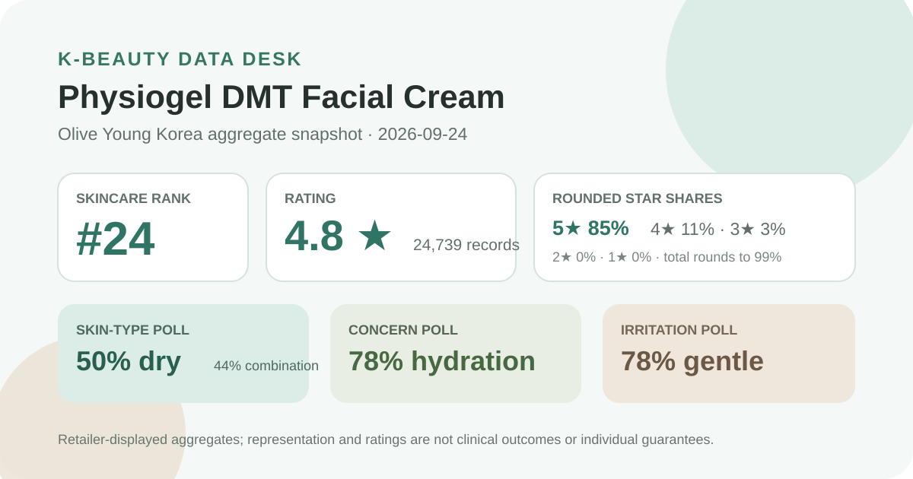
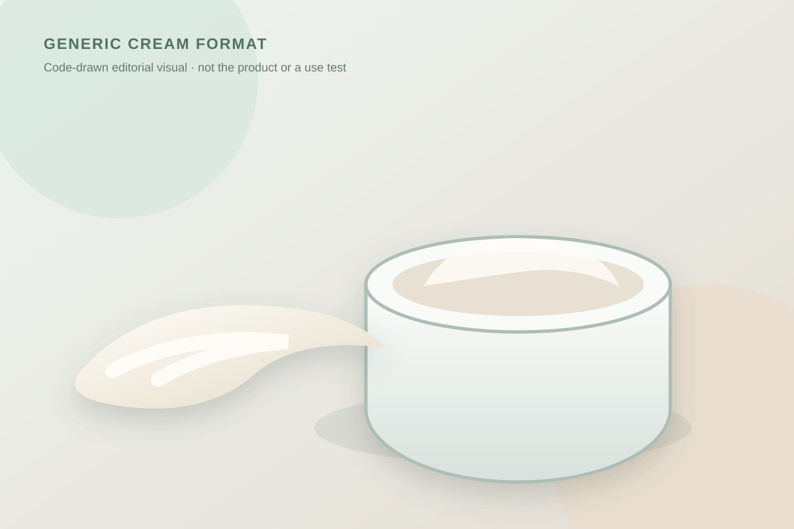

Data captured September 24, 2026. This is an independent analysis of retailer-displayed product information and anonymous aggregate review signals. I did not test the cream, and no individual review, reviewer identity, product photograph, or user photograph is copied or translated.

The short version: Physiogel DMT Facial Cream appeared at number 24 in the captured skincare sales ranking. Its product header and review panel agreed on 4.8 out of 5 from 24,739 records. The strongest displayed survey signals were dry skin at 50%, hydration concern at 78%, and a gentle response at 78%.
The displayed distribution leans strongly positive, and the review base is large enough that the average is not resting on a handful of records. Even so, the percentages sum to 99%, which is consistent with a rounded storefront display. They should not be converted into exact counts or treated as a complete dataset.
A high share of four- and five-star selections shows broad favorable rating behavior inside this retailer's accumulated records. It does not establish why shoppers chose those scores, whether the formula caused a particular result, or whether the sample represents buyers outside the platform. The retailer display also does not independently verify every reviewer's identity or control for bundles, reformulations, incentives, repeat purchases, or changes in availability.
Dry skin was the largest skin-type response at 50%, with combination close behind at 44% and oily at 5%. This is best read as sample composition. It does not mean half of all users have dry skin, nor does it prove the cream works better for dry skin than for another group. Self-selected retail polls reflect who answered and how the platform framed the choices.
The concern poll was more concentrated: 78% selected hydration, 21% soothing, and 1% wrinkle/brightening. This makes hydration the clearest shopping context in the displayed aggregate. It is not an instrumental measurement of moisture, a trial endpoint, or evidence that the product changes skin structure. “Concern” describes the response category chosen by shoppers, not a verified outcome.
The irritation poll showed 78% gentle, 20% ordinary, and 2% felt irritation. The 2% response matters because a high gentle share is not the same as universal tolerance. Individual reactions depend on the current formula, amount, frequency, other products, environment, and personal history. Retail poll labels cannot establish hypoallergenicity, non-comedogenicity, suitability for a diagnosed condition, or safety during treatment.

The listing calls this a facial cream, so it is reasonable to discuss the broad role of a cream-format product. It is not reasonable to claim a specific feel without handling it. I cannot confirm whether this formula is rich or light, glossy or matte, quick to absorb, tacky, scented, prone to pilling, or comfortable under sunscreen and makeup.
The local illustration is deliberately brand-neutral. The soft ivory swirl and plain jar communicate the general product category only. They do not recreate the product, package, or a reviewer's photograph. Shoppers who care about finish should prioritize a tester, a small size, or a retailer with workable returns over visual inference from an editorial graphic.
The captured title described a 200 ml cream with a 50 ml toner and one mask. The promotional price of ₩25,900 equals about ₩1,295 per 10 ml when calculated from the main cream volume alone. That intentionally assigns no separate value to the companion items because the listing did not price them individually.
Bundle math can be useful, but it should not overpower routine fit. The set is only economical if the selected option, current formula, size, seller, expiry, and final checkout terms match what a shopper actually needs. Gifts and discounts can disappear, and international prices can differ because of shipping, tax, duties, or a regional package.
If your skin is actively inflamed, recently compromised, or being treated for a condition, retail aggregates should not direct medical care. Follow qualified guidance appropriate to your situation. Stop use if a concerning reaction occurs and seek help when needed.
The captured product and review views both displayed 4.8 out of 5 from 24,739 records. Rounded star shares were 85% five-star, 11% four-star, 3% three-star, and 0% for both two and one star.
Dry was the largest captured skin-type response at 50%, but combination was also substantial at 44%. Those shares describe poll representation, not comparative performance or suitability.
No. The poll is an anonymous aggregate retail signal. It cannot predict individual tolerance or establish safety for sensitive skin, allergies, eczema, rosacea, acne, pregnancy, or another condition.
No. It is a local code-drawn format visual, not a product or user photograph and not evidence of the real formula's appearance.
Not necessarily. They were displayed on the capture date. Verify the current option, coupon terms, gifts, stock, shipping, and checkout total.
Physiogel DMT Facial Cream was the first valid unpublished product in the captured skincare ranking, appearing at number 24. Its header and review view agreed on 4.8 stars from 24,739 records, and the page exposed a useful rounded distribution plus skin-type, concern, and irritation polls.
The data supports a measured conclusion: this is a widely reviewed, strongly rated cream listing whose captured audience leaned dry or combination, hydration-focused, and gentle in its poll responses. It does not support a claim that the cream will repair a barrier, hydrate for a defined period, suit every sensitive user, or treat any condition. Use the aggregates to frame questions, then verify the current label, option, texture, and personal tolerance.
← All K-Beauty Data Desk reviews · Best-seller rankings · Skin-poll representation · About & methodology
The analysis is based on the dated retailer product page captured on 2026-09-24. Open the source listing.
Published by The K-Beauty Data Desk · Aggregate data captured 2026-09-24. No individual review text, name, product photo, or user photo is reproduced or translated. I did not test the product and received no product or payment for this coverage.